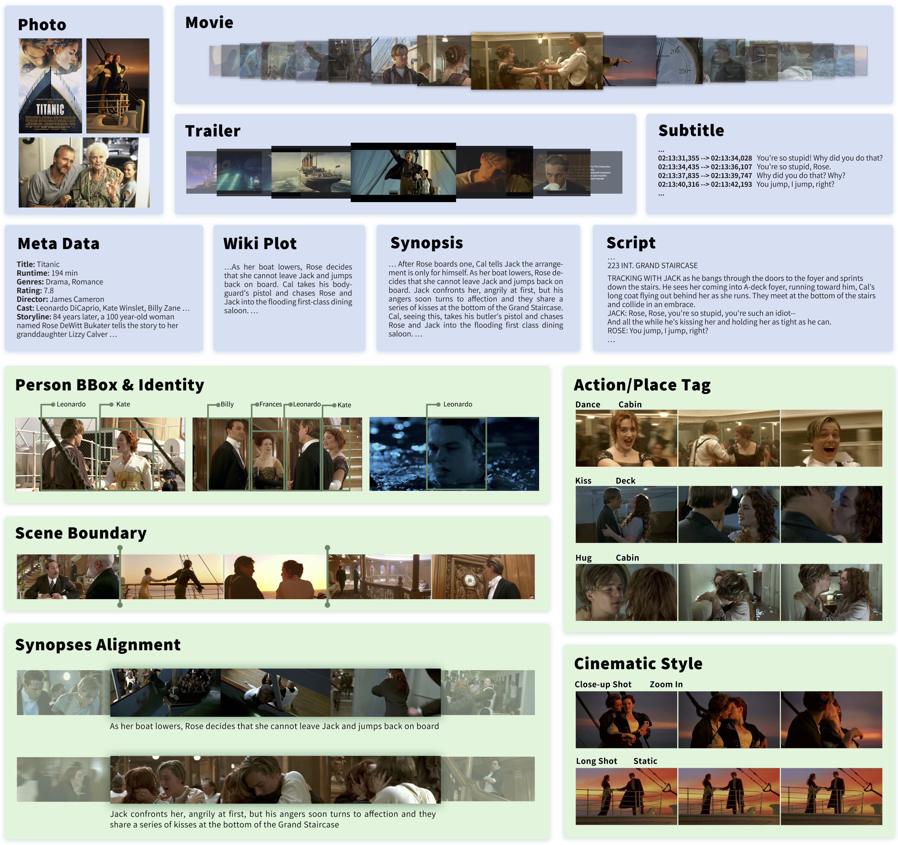
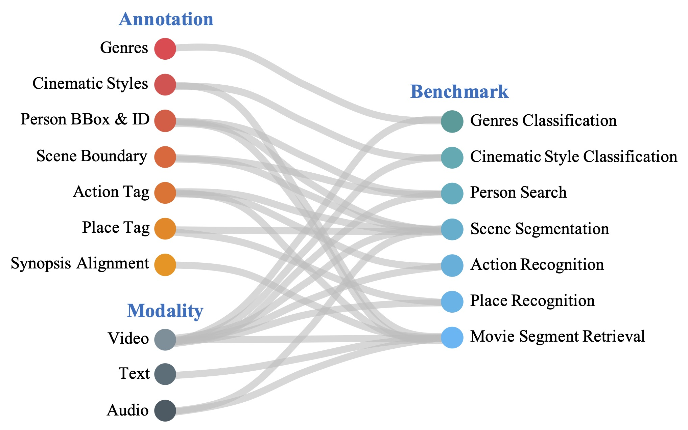

Overview
Recent years have seen remarkable advances in visual understanding.
However, how to understand a story-based long video with artistic styles, e.g. movie, remains challenging.
In this paper, we introduce MovieNet -- a holistic dataset for movie understanding.
MovieNet contains 1,100 movies with a large amount of multi-modal data, e.g. trailers, photos, plot descriptions, etc.
Besides, different aspects of manual annotations are provided in MovieNet, including 1.1M characters
with bounding boxes and identities, 42K scene boundaries, 2.5K aligned description sentences, 65K tags of place and action,
and 92K tags of cinematic style. To the best of our knowledge, MovieNet is the largest dataset with richest annotations for
comprehensive movie understanding. Based on MovieNet, we set up several benchmarks for movie understanding from different angles.
Extensive experiments are executed on these benchmarks to show the immeasurable value of MovieNet and the gap of current approaches
towards comprehensive movie understanding.
We believe that such a holistic dataset would promote the researches on story-based long video understanding and beyond.
Dataset
Statistics

Citation
@inproceedings{huang2020movie,
title={MovieNet: A Holistic Dataset for Movie Understanding},
author={Huang, Qingqiu and Xiong, Yu and Rao, Anyi and Wang, Jiaze and Lin, Dahua},
booktitle = {The European Conference on Computer Vision (ECCV)},
year={2020}
}